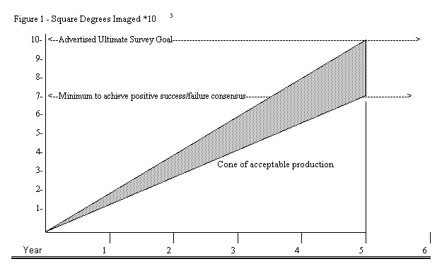
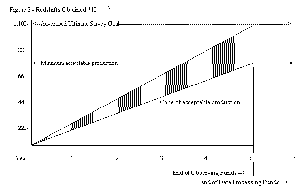

Sloan
Digital Sky Survey
(SDSS)
Operations Readiness Review
conducted
April 25 to 27, 2000
Reviewer's Report
Prepared by the Review Team
Jim Crocker, Chair
Version 2, May 31, 2000
Table of Contents
1. Introduction and overall impressions
2.
The Review
2.1
Review Overview
2.2
A note about duplication and negativity
3. About this report
4. Charge to the Review Team
5.
Systems Requirements and Science Commissioning,
Breakout session
5.1
Project Status and Production Tracking
5.1.1
Quality versus quantity conflict management
5.1.2
Mechanism for tracking production progress, conic progress charts
Example Survey Progress Tracking Tool Figure 1
Example Survey Progress Tracking Tool Figure 2
5.2
Project Management
5.2.1 Project Management
Overview
5.2.2
Real-time software
5.2.3
Personnel safety
5.2.4
Unauthorized network access
5.2.5
Equipment safety, Instrument-change risk
5.3
Management of Science Requirements for the SDSS
5.3.1
Requirements Overview
5.3.2
Observing efficiency overview
5.3.3
Method for evaluating observing efficiency versus performance
5.3.4
Observing efficiency versus observing staff
5.3.5
Observers as resource, Lead Observer
6.
Observers and Observatory Operations,
Breakout session 2
6.1
Observers 1
6.1.1
Migration of responsibility to Observers
6.1.2
Impediments to observing efficiency
6.1.2.1
Spectroscopic Overhead
6.1.2.2
On-Line Quality Assessment Tools
6.1.2.3
Documentation and troubleshooting experience
6.1.2.4
Building-motion conservatism
6.1.3
Informed rather than involved
6.2
Observers 2
6.2.1 Observers Overview
6.2.2
Observing Staffing Schedule cannot be maintained
6.2.3
Lead Observer, off-shift time recommended
6.2.4
Migration of responsibility to Observers
6.2.5
Future Observer Skill-mix
6.3
Observers 3, Observatory Operations, Engineering - Software
6.3.1
Observatory Operations Overview
6.3.2
Improved Observer Interfaces, dedicated status displays
6.3.3
Increased functionality of Observer's Programs (IOP, SOP, MOP),
companion observer
6.3.4
Plan to transition the focus from development to production operations
6.3.5
Configuration management and documentation
6.3.6
Support for MCP and real-time programming
6.3.7
One-person software risk
6.3.8
Plan and schedule for upgrades and maintenance
7.
Hardware Systems and Their Maintenance,
Breakout session 3
7.1
Hardware Systems
7.2
Equipment-Safety Related Mechanical Issues
7.3
Image-Quality Related Mechanical Issue
7.4
Observing-Efficiency Related Mechanical Issues
8
Questions and Answers
8.1
Breakout session 1, Systems Requirements and Science Commissioning
8.1.1
Secondary mirror support modifications
(Jim Crocker/Peter Gray)
8.1.2
Mirror re coating (Richard
Green, I believe)
8.2
Breakout session 2, Observers and Observatory Operations
8.2.1
One-person software risk (Ruth Pordes)
8.2.2
Scope of remaining 10% of operations software (Ruth Pordes)
8.2.3
Goals/schedule of instrument-change automation (Ruth Pordes)
8.2.4
Hardware Configuration Control, "as-built status" (Peter
Gray)
8.2.5
2.5-m Telescope, work coordination (Peter Gray)
8.2.6
Spectrograph, fiber system (Peter Gray)
8.2.7
Fiber maintenance and QA checks (Peter Gray)
8.2.8
Fiber performance responsibility (Peter Gray)
8.2.9
Instrument-Change System (Peter Gray)
8.2.10 Telescope, preventive
maintenance (Peter Gray)
8.2.11 Plate Manufacture (Peter
Gray)
8.2.12
Observers Tasks, interaction with day shift (Peter Gray)
8.3
Breakout session 3, Hardware Systems and their Maintenance
8.3.1
Status of Documentation (Ralf-Rainer Rohloff)
8.3.2
Mechanical/optical spare list (Ralf-Rainer Rohloff)
8.3.3
Formal mechanism for documenting problems (Ralf-Rainer Rohloff)
8.3.4
Power failures (Ralf-Rainer Rohloff)
8.3.5
Image quality and seeing (Ralf-Rainer Rohloff)
8.3.6
Cause of Secondary failure (Ralf-Rainer Rohloff)
8.3.7
Identify cause of image quality asymmetry (Alan Schier)
8.3.8
Data pipelines (Alan Schier)
8.3.9
Image quality at the edge of the field (Steve Smee)
8.3.10 Noise on u' CCD in dewar
2 (Steve Smee)
8.3.11 Photometric calibration
procedure (Steve Smee)
8.3.12 Survey quality data
(Steve Smee)
8.3.13 Can survey proceed with revisions
in progress (Steve Smee)
8.3.14 What is the MTBF (Steve
Smee)
9.
Reviewers post-review discussions
9.1
Efficiency versus performance controversy
9.1.1
One reviewer suggests
9.1.2
Another reviewer responds
9.2
Secondary Mirror Support System replacement
10
One reviewer's notes of Tasks / Problems List
10.1
By summer the following improvements should be complete
10.2
List of work items mentioned in presentations
10.2.1 General telescope and
operations
10.2.2
Spectrographs
10.2.3 Operations
10.2.4 PT
10.2.5 Interlocks
10.2.6
MCP
10.2.7 Observing
10.2.8 Configuration Management
10.2.9 Target-Selection Criteria
11.
The Review Team
This document is the report of impressions and recommendations written by the Review Team for the Operations Readiness Review of the Sloan Digital Sky Survey (SDSS) conducted from April 25 to 27, 2000 at Apache Point Observatory (APO).
The overall impression is very positive. All project personnel have every reason to be very proud of their accomplishments. The project has confirmed the basic concept of the Survey and, even though the actual Survey has not officially started, already has some impressive science achievements to its credit.
The Review Team was extremely impressed with the progress the SDSS Project has made to date. The imaging camera and spectrographs appear to be performing at or near survey levels and are producing impressive scientific results. The facilities for instrument handling and configuration seem professionally engineered and well suited to safely perform the required task. The ability to acquire and process the staggering amount of astronomical data is striking. The high level of professionalism and dedication of the project personnel is widely evident.
The Project already has some impressive achievements to its credit, including not only the highest redshift quasar found to date but a large enough sample of quasars to make an estimate of the quasar luminosity function at redshifts higher than 3.5; the discovery of several brown dwarfs; and the identification of enough halo stars to identify tidal remnants. These early results are widely known within the astronomical community and already demonstrate the types of discoveries that will be enabled by such large, uniformly selected samples of objects. The dataset that will be provided by the complete Sloan survey will have a profound and lasting impact on many fields of astrophysics.
The overall impression from the review is that the engineering effort is well under control with a fairly well defined set of issues to be completed in order to begin full-scale survey operations. There were no glaring mechanical issues that had not been addressed already, in some fashion, by the engineering team. With the exception of some issues to do with image quality, the telescope performance appears to be quite good and instrument performance meets specification. The telescope interlock system is well thought out with only a few remaining issues to do with instrument interlocks. Several efficiency related hardware enhancements were presented and the scope and implementation of these improvements seems reasonable.
Overview-level documentation for all aspects of the project was provided to the Review Team via www posting previous to the review. More in-depth information was provided in presentations at the review for all aspects of the project except the data processing that is performed at Fermilab and the Project Management structure and process. A separate review of the data processing performed at Fermilab will be conducted at Fermilab before the end of July. Paper copies of the www posted information and the presentations were provided to the Review Team at the review.
The initial review planning, schedule, and logistics for housing, meals, and meetings were performed by the SDSS project. The actual review details and preparation of this report were performed by the Review Team.
In addition to attendance and discussion at the presentations, the Review Team organized themselves into three breakout sessions, roamed the observatory watching operations and interacting with Observers, met several times in executive session, and presented a close-out session at the conclusion of the review.
The Review Team
organization and subjects of the breakout sessions were:
1)
Systems Requirements & Science Commissioning
(Comments in section 5, Q&As in section 8.1)
Gary Schmidt
Jim Crocker, Review Team
Chair
Sidney Wolff
2) Observers and Observatory Operations (Comments in section 6, Q&As in section 8.2)
Peter Gray
Richard Green
Ruth Pordes
3) Hardware Systems and Their Maintenance (Comments in section 7, Q&As in section 8.3)
Alan Schier
Ralf-Rainer Rohloff
Steve Smee
The Review Team has taken the position that this report should serve as a management tool to aid the Project in the very difficult transition from construction/commissioning to production operations. "Production" is emphasized here because this project has set very stringent quality, quantity, and uniformity goals to achieve in a relatively short period of time. The "production" pressure in this project will be a constant source of conflict adding to the already arduous task of managing such an ambitious effort. To that end, we have assumed the fundamental question asked of us is not, What is right? although a list of what is right would be very long, but, What is wrong? and recommendations on approaches to address these issues. To the credit of the project, there follow more than 20 pages of What is wrong? We say "to the credit of the project" because essentially all of the items listed were raised by project personnel, most with proposed solutions.
The lists of items appear longer than they really are because there is duplication of items from different Team Members but from different perspectives. The duplications remain to preserve the different perspectives in the hope they will be useful to produce a more effective solution. The size of the observing staff is a good example. It is clear the observing staff is not large enough to accomplish all the work required. One perspective is the number of people required, another is how to most effectively use the valuable resource represented by the high-level of personnel now on staff, and another is the skill mix that may be suitable after some years of operations.
The questions and answers are included as recorded to preserve the original context. This has resulted in more duplication but is retained to preserve the additional insight provided by the different perspectives of the sources.
While there are many issues to address, as would be expected in such an ambitious endeavor, one must keep in mind we are addressing the last few % of data quality and processes related to observing efficiency, not any fundamental flaw in either concept or execution.
Again, the Review Team is very positively impressed with the accomplishments to date and predicts a high probability of success.
This report is largely a compilation of writings by the Review Team members, questions asked by the Review Team members, and answers to these questions written by Project staff within a few hours. Section and subsection numbering and headings have been added to facilitate organization and referencing, however, the original text is retained to preserve the tone and context of the original writings.
Sections 5, 6, and 7 of this report correspond to the breakout session numbers 1), 2), and 3) above and contain the Review Team member's writings organized by breakout session. Section 8 contains the questions and answers organized by breakout session in subsections 8.1, 8.2, and 8.3.
Section 9.1 is an Email discussion conducted by two reviewers a few days after the review about the performance versus efficiency controversy. Section 9.2 is a comment by one reviewer, who was also a reviewer for the secondary mirror damage investigation, about the justification for replacing the mount with the new design. Section 10 is one reviewer's list of work items. Section 11 is a list of the Review Team members.
The construction phase of the Sloan Digital Sky Survey is complete, the testing phase is nearly complete, and commissioning operations have been underway for some time. Science quality data has been obtained from the commissioning operations, analyzed, and published. The Survey is now making the transition from commissioning to routine operations. This transition is not complete and there is much to be done as we shift our focus from building and testing equipment to making the equipment reliable and efficient. At the same time, we are building a scientific staff, which will bring to fruition the goals that we established a decade ago. These goals were to image about 10,000 square degrees of the Northern Galactic Cap; to select from those images a million objects, primarily galaxies and quasars; to obtain spectra of those objects; and to create a catalog of those images and spectra, first for the astronomers from the participating institutions and then for the astronomy community-at-large.
We are planning two reviews of the Survey in order to help us set our course for the next five years. The first review, which will be held at Apache Point, from April 25 to 27, will examine whether the Observing Systems and the Observatory Support will be able to sustain the five years of observing and produce the quality of data that is needed to achieve our scientific objectives. The second review will be held at Fermilab, the site of the SDSS data processing and distribution, prior to the end of July. In that review we will ask the reviewers to examine whether the data processing operations can process the data in a timely manner and effectively distribute it to the collaboration and then the astronomy community at large in accordance with our distribution plan developed in cooperation with the National Science Foundation.
The specific charge for the review of the Observing Systems and Observatory support is contained in three sets of questions, which we would like this Review Team to answer:
•
"Will the Observing Systems, with the proposed improvements, be
ready to support the five-year survey? Will
they, as you find them on April 25, be sufficient to achieve our scientific
goals?"
A:
As of April 25, the data do meet, apart from possible questions of image
quality, the quality requirements. The
project is far short of being able to produce data in the required quantities.
Solving that problem will require a substantial investment in real-time
software, and it is not clear whether adequate resources have been identified.
•
"Has the observing staff been prepared to support a five-year
survey? In particular has the SDSS Management given them the tools and training
to carry out the survey? Is the size of the observing staff sufficient to
support a five-year survey?"
A:
The observing staff appears to have
the commitment, competence, and training required, apart possibly from issues of
quality assessment of the data. It
is not clear they have the tools required to achieve adequate efficiency of
operation. The observing staff
needs to be augmented by one, but in addition, closer attention needs to be paid
to optimizing the range of skill levels, the way shifts are scheduled, and the
effective use of the observers.
•
"Does the project have sufficient technical personnel at APO and the
participating institutions to support the maintenance and continuous improvement
of efficiency and reliability? Given the geographic dispersion of people will
our management plan work?"
A:
We were not given enough management
information to assess the answer to this question. Better project management is a prerequisite for evaluating
these questions.
We are requesting more information and time to review this for the July review.
In any production activity, the desire to improve the product will be in conflict with the desire to produce a larger quantity of data. It will be extremely important to define "good enough" and to resist requirements creep. The expansion of the science utility of the survey beyond its current state is evident and future expansion, while noble in ideal, may place at the risk the ability to achieve the necessary volume within the available resources.
Transitioning into the production mode of the survey will be challenging. As we reviewed the presentations, the challenges being experienced in the transition from commissioning to operation were evident.
More detailed and thoughtful analysis will be necessary to identify the areas of efficiency or performance improvements required to achieve the necessary production rates. It must focus attention on the trades that will be required between performance improvements and efficiency improvements. These items are at different ends of the project time horizon and need to be viewed in harmony.
The Review Team concluded that a top-level metric would be helpful in both focusing the goals of the survey as well as tracking the progress. Such a tool would assist in identifying where actions are required to ensure the end result meets the scientific requirements within the allocated budget. The example charts shown in Figures 1 and 2 could be used to track the progress of the survey over the funded five years. The survey objectives are expressed as minimum accomplishments for survey success. The lower level bounds the science projects enabled with the currently achieved system performance over square degrees of sky in Figure 1 and number of redshifts in Figure 2. The upper level is what additional science projects would be enabled with slightly improved performance and a more optimistic assessment of sky coverage or number of spectra. By plotting the progress in these areas, everyone associated with the project can tell at a glance the progress to date.
At this juncture, the team suggests that more attention should be applied to improving the operational efficiency of the survey even if it is at the risk of delaying or eliminating additional performance improvements.


Some data of the caliber required for the survey have already been obtained, even at this early stage of operation. However, we also heard about many improvements that could be made in both hardware and software that would improve performance, reliability, efficiency, and safety. What was not presented to us was a systems level overview of relative importance of these various improvement projects when measured against the scientific requirements of the survey, a method for establishing the priorities among the different projects, an integrated schedule for completing them, or a mapping of projects onto available budget and manpower resources. The tools for managing projects were not in evidence during our visit, and so we are not able to determine the extent to which they are being used. However, in a project of this complexity, given the distributed nature of the staff and resources, and the competing and probably conflicting claims for regular observations and continued enhancements to the facility, the use of project management tools is essential.
Management of software development is notoriously more difficult than the management of hardware projects. Not surprisingly, it is our impression that the real-time software for supporting operations is converging more slowly than the non-real-time software and hardware components of the system. Since a very high level of efficiency as measured in terms of time on the sky is required in order to achieve the project goals in a period of five years, resources will have to be identified for continued software development. Quantitative goals for efficiency should be established, and priorities for new software should be determined in order to achieve those goals as early in the project as resources permit. Improved automation in instrument set up, more efficient instrument changes, and real-time quality assessment of data would all enhance throughput.
Safety must be a major concern for any astronomical observatory. Small groups of people are working in remote locations around massive moving machinery. Equipment worth up to a million dollars or even more must be operated, handled, and repaired, often late at night when people are tired. Severe environmental conditions, including lightning storms or blizzards that prevent access for days at a time, are common. The staff of the SDSS is very aware of these issues and has taken some steps to address them. We particularly commend the staff for scheduling an external review of safety by experts from other organizations. However, we recommend that priority be given to establishing clear and enforced procedures for tagging and lockout of systems that may present dangers to personnel; to providing systems for lightning protection and specifying procedures for disconnecting key equipment and taking other appropriate steps during storms; and to creating an environment that encourages safety consciousness on the part of staff and visitors and facilitates the reporting of safety problems.
We are concerned about external access to the SDSS computer network. Hacking is an increasingly serious problem for all networked systems, and observatories are frequently targets. Appropriate security measures should be put in place that allow reasonably convenient access by external staff but that provide a substantial challenge to unauthorized users. This is an area that will have to be continuously reviewed and updated.
The current plan of operations calls for changing between imaging and spectroscopy during the night as image quality and cloud cover change. The overhead of this change is substantial and each instrument change involves some degree of risk. Steps should be taken to: 1) speed up the process of changing of instruments; 2) make the process as risk free as possible including possibly limiting the number of instrument changes per night to one and/or restricting how late at night they can occur; and 3) accumulating data that enable simulations to determine whether such instrument changes actually enhance throughput. For example, if seeing is typically strongly variable over hourly intervals during the night, it may be better to wait out an hour of bad seeing rather than switch to spectroscopy on photometric nights. Some primitive forecasting tools may be helpful; if the jet stream is over the site or a front is moving through, for example, good seeing is very unlikely, and the night should probably be dedicated to spectroscopy.
A detailed evaluation of the science requirements for the SDSS is available in Scientific Requirements and Scientific Commissioning for the SDSS, written and/or edited by M. Strauss. This document outlines the scope of the project, its scientific goals, and provides quality specifications for the data to be cataloged. The Review Team is truly impressed at the degree to which most of these goals have been met or exceeded. For example, the 100mas astrometric accuracy greatly exceeds the 180mas "Drop-Dead" requirement and already meets the goal required for proper motion determinations. Throughput goals for the imager are reached for all but one CCD. The spectrographs essentially meet or exceed all criteria tested thus far, including throughput, resolution, wavelength coverage, and stability. These and other technical feats attest to exceptional talent, effort, and dedication on the part of all involved.
The one survey criterion that is still far from adequate is overall efficiency. If the project is to achieve its stated imaging and spectroscopic goals, it must achieve a collective change in perspective from one of "building" to one of "producing". This change in perspective also necessitates a change in attitude and management philosophy. When evaluating a proposed modification in hardware or procedure, consideration must be given not only to cost (in dollars) and benefit (in data quality), but also to the project downtime required to implement the modification. Once the 5-year clock begins to run, every hour that the telescope is not on the sky is another portion of a stripe that is not imaged, or a field that will not produce spectra. This reality poses a real dilemma for most astronomers, who are not accustomed to thinking in terms of production. As research scientists, it is our nature to push an idea or technology to its physical limits. Yielding to that tendency at this point in the SDSS must be very critically weighed against the impact of the decision on the eventual science that is obtainable from the data. A case in point is the current desire to improve the secondary mirror support to potentially improve an astrometric accuracy that already meets or exceeds all projected goals. However, the quandary is evident across the project: from image quality to CCD performance to calibration requirements.
In delving into this question, it is the opinion of the Review Team that the SDSS scientific/ management staff has not yet implemented a firm mechanism for evaluating the scientific impact of technical and operational decisions that must be made. For example, the Strauss document fails to quantify the scientific compromise that would result from failing to reach ANY of the technical specifications. It is our recommendation that a small group of scientists from the member institutions with deep interests in the project should be assembled to carefully consider the scientific goals of the project and justify the technical requirements and real coverage which are motivated by that science. This input would be an essential ingredient to the setting of the performance benchmarks by which progress will be judged. The group should also evaluate the scientific impact of proposed upgrades in hardware or changes in operational policy. At a minimum, this process would weigh possible improvements in data quality against the likely reductions in sky coverage. In some cases, tradeoffs of performance vs. instrument safety might also need to be considered. Final decisions on such proposals would, of course, be made by the Project Director on the basis of the recommendation of that group as well as the advice of the Project Scientist and Project Manager. A starting point for this scientific advisory committee might be the existing SOC.
Another reviewer comments:
The Observing efficiency versus performance section 5.3.3 highlighted the need for a committee of survey scientists that can trade performance and coverage against scientific goals. That point is relevant to a question that Jim Gunn asked us about near-term tactics. Jim wanted to know if they should shut down for a couple of months and fix everything or continue to have a mix of science verification data gathering and improvements. Our point should be to emphasize that the project needs a process whereby they can answer such questions for themselves. That process requires adequate management information and the benchmarks to assess impact on science. If such questions are handed to the science committee for evaluation, their advice then informs the director's decision, mediated by the Project Scientist. The existence of such an apparatus would engage the scientific partners and allow the kind of trades we've been advocating.
The required increase in survey efficiency also drives a need for better organization of effort within the mountain staff. Because the Review Team was not presented with an overall organization chart of personnel, it was not possible to accurately evaluate lines of communication or the adequacy of the staff to address the outstanding technical and operational problems. Clearly, this must improve. Timetables must be generated for the completion of key outstanding software and hardware projects. Manpower must be identified and their time budgeted. Safety procedures must be solidified, followed, and monitored. The existing talent mix must be evaluated in the context of a production operation, and adjustments made where necessary. In short, a "top-down" approach must be adopted, where the primary benchmark is progress toward completion of the survey.
An important resource which appears to be largely overlooked is the team of Observers. Perhaps more than any other group at this point, these individuals will be essential in realizing the project’s potential. As Ph.D.-level scientists, they are an expensive team with a great deal of talent to offer toward reaching the overall efficiency goals. Indeed, it is clear to this Review Team that the Observers also take a personal stake in the success of the project. The current organization, however, does not provide an effective means for them to exercise their talents and education or a good path for their ideas to be communicated to the higher-level scientific and managerial staff where they might be implemented. The result is reduced survey productivity and a disillusioned observing staff. It is the very strong opinion of the Review Team that a Head Observer should be hired, among whose duties would be the management and organization of the Observers, the setting of their schedules, their hiring and training, and the setting of their duties. He/she would also monitor the overall performance of the team, fill in for sickness/vacation, and coordinate observing procedures with relevant management personnel. The Head Observer would act not only as a conduit for raising important suggestions and concerns of the Observers, but also as a filter for the many competing influences that they otherwise receive.
The SDSS survey is in a transition mode between commissioning and operations. The Review Team feels that it is important that this transition occur and SDSS moves into regular operations with high efficiency. Two specific questions related to this are:
1) What are the major impediments to efficient operations?
2) Who makes the list of things to be done and who decides priorities and schedules?
During the commissioning phase, these issues were best addressed by engineering and project people. However, moving now into an operations mode, it is felt that the people charged with delivering the "product", i.e. the Observers, should now play a more prominent role. This is particularly true if one considers a chart showing % complete survey versus time, which is reflected in the strategy that SDSS needs to adopt over the coming years. The Observers group has direct responsibility flowing from this, to play a leading role.
The Observers group was asked one by one to identify the major impediments to efficient completion of the survey from their experience with nightly operations. The following major issues were mentioned:
It is felt that with the current problems and inefficiencies, there was no way the spectroscopic portion of the survey could be completed in any reasonable time scale. The particular problems mentioned were: guide fiber acquisition speed, poor pointing model, stable focus, and extra (possibly unnecessary) calibrations.
The lack of these prevents a real-time assessment of the data quality and completeness. This means the exposure times are probably being extended unnecessarily longer to guarantee good quality data.
A lack of proper documentation and troubleshooting experience has meant that problems often take longer to fix than they should.
The complicated operation of the building roll-off and roll-on requires they be more conservative with observing conditions since the SDSS telescope is more exposed and vulnerable in case of a sudden weather change.
Since the Observers are now playing a leading role in the completion of the SDSS survey, their involvement in the process of problem solving and follow-up needs to change. The issues/problems they have raised which effect the efficiency of their observations are of critical importance with the SDSS moving into an Operations mode. A greater involvement in the Prioritization, follow-up, and deadlines for improvements and problem fixes should be given to the Observers.
This process requires closer consultation and collaboration with Engineering. One comment we heard repeated several times was that the Observers are not internal to this process. They are "informed" rather than "involved". One way of improving this situation might be to provide greater overlap with daytime engineering operations. Both for the evening hand-over and start up, but also in the morning when engineering work is being planned. Some type of regular formal meetings between Observers and Engineering to plan and prioritize should be organized.
In the data production phase of the survey, the observers represent a key asset for efficient and successful completion. They were selected to have research experience and interest in the survey data. That level of expertise is highly valuable during the current commissioning stage, during which they can identify, verify, and occasionally implement improvements to operational efficiency, particularly at the software and user interface level. Several personnel issues related to this group should be addressed in order to assure their productivity and longevity with the project.
In the documents provided for the review and in the presentations and discussions, it was clear that the current staffing schedule is not maintainable over the long run. In order to avoid burnout, two objectives must be realized in the near term, without compromising safety and with minimal impact on operational efficiency. One is to significantly reduce or eliminate the frequency of "shift slipping", in which schedules are changed among full night, early evening, late evening, and days. The observers are currently showing the signs of fatigue that come to any shift workers that have to alternate shifts frequently. The other is to allow more substantial overlap with day workers, with benefits to on-site operations as discussed above. More extensive overlap with consortium scientists during working hours is another significant advantage. Several creative alternatives to the current paired shift assignments are possible, and should be explored.
The observers themselves suggested two additional observers should be added to the staff. We recommend that the current complement be augmented by one, in order to create the position of Lead Observer. The primary purpose is effective management of this key scientific resource. A major goal of the position is to give the observers a more significant voice in the scientific planning and execution of the survey. This individual will interact with (and preferably be part of) the project management team, assuring that the priorities as articulated by the observers for investments to enhance survey efficiency are considered carefully in the course of project prioritization. This lead person will communicate the priorities and status of the project to the observers, coordinate their scheduling, plan their non-shift observatory projects, guide their skill enhancement and career development, and personally serve on shift, to be both an effective group leader and to create more off-shift time for the observers.
With a strong site-based cadre of observers, responsibility for tactical decision-making on execution of the survey should devolve to the site. Following the models of queue observing at ESO and WIYN, the imaging and spectroscopic goals for each full lunation would be developed by the science planning team, then transmitted to APO, where the observers would make the nightly choices about the details of program execution. The observers still desire frequent communication with the off-site survey team members. This level of delegation of responsibility is appropriate for the skill level of the observers and the nature of the "production" phase of the Survey.
As the survey progresses and data acquisition becomes a more nearly routine activity, it will be worthwhile to consider a change of skill mix if the necessity arises to fill a vacant observer position. Ph.D.-level research experience is a worthwhile prerequisite for data quality assurance and assessment of short- and long-term impact on science of instrument and telescope anomalies. Such a background will be less critical for telescope, instrument, and facility operations when these functions are mature. At that time, Survey management should consider replacement with a more traditional "telescope operator" profile. For the remaining, relatively short duration of the survey, that person could be assigned nearly exclusively to operating shifts, further freeing the observers to concentrate more on data quality, pipeline applications, and the option of longer blocks of non-work hours to make progress on science projects.
The operational software appears to be in good shape overall to support initial observing. There is clearly additional functionality needed and many rough edges to be addressed to provide software to support efficient operations that are maintainable through five years of production data taking.
Many different software sub-systems have been integrated to support operations. We agree with the assessment that a layer of software integration, including user friendly interfaces, and easy to organize and use status displays, is needed to support 5 years of operations. We encourage the survey to find the resources to implement a first version of this over the next few months. Since these are the panels that are in daily use by the Observing staff, the requirements should be identified through watching their use of the software during observations and discussion of their needs and ideas towards more efficient operation.
We recommend the addition or allocation of dedicated status screens in the control room to show existing and enhanced status displays.
There is a need for increased functionality and stability of the xOP programs and for real-time quality analysis of the data. For increased operational efficiency, both in the short and long term, the Observers must have continued interaction and the opportunity to work with the developers responsible for this software. The quality analysis programs should be configured to ensure they do not perturb the main observing process. If the speed of the networks allow, perhaps there is an opportunity for a "companion observer" at Fermilab to help with QA during observing.
We were not presented with a prioritized list of software tasks, assignments, and schedule. We recommend that one be posted. We were not presented with any plan for the transition from development of the software to an operations focus and any accompanying transfer of knowledge and responsibility. We recommend that such a plan be developed to address operational use of the software for the next five years.
We endorse a long-term commitment to configuration management and to provide operational and reference documentation. We encourage including documentation in configuration management. We recommend including regular inspections (code and documentation) in the configuration management plan.
We agree with the concern and recommendation to identify someone with long-term responsibility for the maintenance and support of the Motion Control Processor. We recommend the "intermittent axis-motion problems" be fixed. Attention should continue to be paid to this software and if problems persist effort identified to do the necessary rewrite of the PVT code. Concern that the MCP code is not interpolating all TCC commands correctly should be understood. We identified a lack of real-time programming expertise at APO and recommend that some be acquired to provide backup support for the experts at Fermilab.
We encourage the software project management to maintain awareness of those parts of the software that have only one person with any knowledge of the internals or one person who has contributed to the code.
A schedule for deployment of the semi-automated instrument-change system should be posted and the necessary resources and priorities assigned.
Plans for incremental upgrade of the data acquisition system to address those parts becoming unsupportable seem appropriate. Sufficient time should be planned for the integration and testing of changes.
We recommend construction and posting of a calendar of all the maintenance tasks with their time and resource budget.
In general, the reviewers feel that priorities should be balanced so as to:
1)
guarantee the safety of personnel and the instrumentation,
2)
improve the image performance and instrumentation robustness,
3) improve operational efficiency.
The overall goal should be to, as expeditiously as possible, bring the instrumentation to a level of performance consistent with a finalized set of scientific objectives. An aggressive, yet plausible, timeline should be established for this objective so as to guarantee the timely completion of the survey.
Listed below is a summary of key improvements and enhancements that, in some way, lead to improved safety, performance, or efficiency. This list is not intended to be all-inclusive but rather to emphasize the issues the reviewers felt were most important.
Catastrophic risk to the instrumentation due to lightning should be mitigated further via implementation of proper telescope grounding and the installation of some sort of formal early warning system. As it stands now, the instrumentation is particularly susceptible when the enclosure is rolled off.
Safe handling of the spectroscopic corrector should be ensured through completion of the dedicated handling cart and storage area.
The completion of the interlock system for safe engagement of the imager optical benches needs to be ironed out. The understanding is that engagement must be performed with the telescope near the zenith to prevent misalignment, and possible damage, of the kinematic mounts.
There is an issue with potential outgassing of the camera getter in the event of a camera warm-up. The engineering team has planned to remove the getter during the summer shutdown. We agree with this line of thinking.
A wind screen shock absorber is needed to prevent damage to the secondary support system in the event of a collision.
The frequency of recoating the primary and secondary should be minimized to mitigate the risk to the optics.
There is uncertainty regarding the source and severity of the image degradation that is observed in the telescope. Before the relatively risky operation is undertaken to ship the secondary mirror and corrector to the Lick Observatory for characterization, the project should gather enough image data to confidently characterize the problem and investigate other possible sources of the degradation. In particular, thermometry should be implemented as soon as possible to investigate in particular any effect of the following on local seeing:
1)
Primary Mirror,
2)
accuracy of the enclosure temperature control,
3)
localized heat sources,
4)
temperature of the wind baffle relative to the air, and the possibility
of a temperature gradient across the baffle.
This should be done before the removal of the secondary mirror and common corrector for characterization. The Max Plank Institute has agreed to lend the SDSS a thermal imaging camera for thermal studies.
It is not clear whether a manual or automated instrument-change system is most beneficial. Whichever method is implemented, the method must:
1)
be kept absolutely as simple as possible,
2)
be thoroughly debugged, and
3)
be implemented as a routine, standard procedure with the users thoroughly
trained in that procedure.
The throughput of the Photometric Telescope must be improved to keep pace with the rest of the observing system.
The mechanical spare parts list should be established and the critical spares kept on the site.
Spectroscopic corrector safety latches should be implemented to minimize the inconvenience of using the special bolts.
Problems with the DIMM should be resolved.
The questions below were asked by the Reviewers and answered by Project personnel, in writing, within a few hours. They are included here as recorded to capture the original flavor. This section of the report is organized in three subsections corresponding to the three breakout sessions to lend perspective as to the context in which the questions were asked. However, some questions may well have been prompted in the general presentation sessions and may not relate directly to the breakout session subjects. Questions from reviewers are denoted by Q:, Comments/concerns expressed by the Reviewers are denoted by C:, answers are denoted by A:.
Q: Why was the secondary mirror mech. "changed"? Why are we changing the sec. Support now?
A: No answer to this question specifically, however, the answer to question 8.3.6 applies.
Q: How is the coating of the mirrors organized (every year at Kitt Peak)?
A: The observatory possesses the facilities and expertise to aluminize all of its mirrors up to one meter in diameter. The chamber is located at Sunspot. However the primary mirror must be shipped to Kitt Peak and this is done once a year. The primary mirror is CO2 cleaned once every two weeks and the secondary is cleaned once a month. We monitor the lenses to determine when to clean these. In addition we will clean the mirrors after a high dust event.
Q: Are there any pieces of s/w essential to survey mountain top operations where only one person has knowledge or has modified the code?
A: Yes: TCC, MCP, some micro-code, maybe (not sure)
Q: Can you give some idea of the scope and magnitude of the 10% software effort needed to provide observers with usable s/w systems for operations?
A: 3 months, not a year
Q: Can you review the goals, schedule, and testing of the automated instrument change?
A: None to this question specifically, however, the answer to question 8.2.9 applies.
Q: It is not clear that a hardware "as-built" status exists. This should be the starting point for subsequent hardware change control and configuration management.
A: It is true that we have not formally documented the as-built status of the various hardware systems. Recognizing this need last fall, I developed guidelines for preparing system commissioning plans that would verify the performance of each system against performance requirements. These plans would also address such issues as spares, maintenance needs, personnel and equipment safety, etc. A copy of the guidance document is attached. Initially, the observers were tasked to develop these commissioning plans with assistance and input from system builders. Since this effort began when the secondary mirror was being repaired and we were not observing, the observers were able to spend some time on this. Moreover, by developing and executing these plans, it was felt that the observers would develop a deeper understanding of how these systems worked. Unfortunately, we did not complete this exercise by the time we came back on the air and since then, the observers have been busy with other responsibilities that have precluded spending time developing these plans.
I firmly believe that we still need to develop and execute these plans to baseline the various systems and understand whether performance requirements are met. Once baselined, the systems will be put under formal configuration control. The difficulty is identifying the resources to complete the development and execution of these tasks. One possibility may be to allocate engineering resources to this effort once the current set of critical engineering tasks is finished. Another may be to ask the observers to pick up this effort again during the summer shutdown, but this will have to be balanced against other duties and activities. In any case, allocating resources to complete this effort is something that project management must address in the near term.
Q: List of problems/work to do on telescope did not include the PMSS support monitoring mentioned by Gunn. Why? Is there coordination between tasks to do on the telescope?
A: A comprehensive list of telescope tasks to be completed is maintained by the project office in the form of two WBSs: one for the construction and commissioning phase; and one for the operations phase. Tasks in these WBSs are discussed and prioritized during weekly phone-cons in which engineering personnel participate, and through direct communication on an as-needed basis. Recognizing that this process has not been as well implemented as it should, we have started having weekly engineering phone-cons to focus on engineering tasks, priorities, issues, etc. These meetings began several weeks ago and it is expected that these will improve coordination and execution of engineering work.
Discrepancies in the various lists presented during this review represent in some part the different perspective that individuals have on these task lists. Notwithstanding, these discrepancies do show that there is room for improvement in our communication and planning process.
Q: There is very little detail on the fiber system. Current performance? Maintenance and QA checks? Who has overall responsibility for fiber performance? Is this included in the spectrograph responsibility?
A: While the fibers are a subset of the cartridges, off the top of my head, I think of performance concerns in three areas:
Performance of the fibers?
Performance of the cartridges?
Performance of the plugging team?
Regarding the fibers, we have concerns about mechanical breakage, optical breakage, contamination/ cleaning, dropouts, and (obviously related to contamination) throughput.
In the most heavily handled cartridge (cartridge #1), we have, as I recall, four out of 640 science fibers that are already optically broken. No other cartridge has so many severed fibers, and we haven’t been running long enough yet to have a feel for how long fibers will last. We recognize broken fibers right away during the mapping process and via other tests. But we also have fibers where the metal tip becomes slightly separated from the red Nylon handling tube. We have learned to recognize this mechanical problem before the separation becomes serious, and we add an external "splint" to the fiber, typically before optical damage occurs. Cartridge #1 has the greatest number of splints – off the top of my head, about 12. We are of course interested in understanding the durability of the fibers; we’d like to extrapolate wear and tear, to understand how things might go before the end of the survey. We have spare fiber bundles on hand, both for science and guide fibers, and we can replace bundles when necessary. But the job is difficult, and we hope it will not often be required.
Fiber tips are relatively trivial to clean, and we take the procedure right from the manufacturer, C Technologies. But we don’t want to clean them unnecessarily, so to date, we typically don’t clean the guide fiber tips unless the observers complain about them. We are less certain regarding the smaller science fibers. We occasionally examine a sample of them via a hand magnifier, and to date, only a few have indicated that cleaning is required. We’re presently discussing modifying a machine, now at the University of Washington which can measure the absolute transmission of a fiber, for use at APO for ongoing monitoring of the fibers. Similar information may also be available from the observers via spectroscopic flat-field exposures but we have not implemented such feedback yet.
We have requested the implementation of a filtered air system that will keep a positive pressure of clean air in the cartridge storage area. The concern is that dust storms from White Sands can, especially in springtime, engulf APO with very dirty air. A positive pressure system has been helpful to keep the 3.5-m telescope clean during dust events and we hope the same will be the case in the cartridge storage area.
We have concerns about the propensity of some fibers to drop out of holes during cartridge handling. These "dropout" fibers seem especially common in cartridge #1, our oldest cartridge. We believe that the Nylon handling tubes, which were chosen to keep the fibers slightly springy (with a positive pressure up against the plate) can, with use, loose some of their original springiness. The result is that certain fibers tend to drop out – not usually all the way, but enough to ruin focus. We are presently examining each plate after plugging, to try to catch low fibers, which are in fact usually possible to reseat without replugging the whole plate. We further recognize that some low fibers are simply the result of plugging error. But others clearly drop on their own – so we are watching the situation carefully, in case we can anticipate the problem becoming more widespread before the end of the survey.
Regarding the performance of the cartridges, we have discovered unanticipated problems with the profiles of the plug plates. As you’ll recall, a plate is loaded into a cartridge and clamped down between bending rings. The result is that the plug plate becomes concave towards the sky, with a depth a little greater than 3.1 mm. This curvature is of course to match the curved focal "plane" of the telescope. We want the curvature to match the ideal to within +/- 100 microns. In practice now, as I recall, only about 50% of the plates are meeting this specification. We believe the problem is more a function of irregularities in the plug plate metal stock than anything else, and a number of people are working to better understand this. Via various tricks, our plugging staff has learned to improve the adjustment of any given problematic plate. But such individual heroics will become more difficult as the pace of observing necessarily picks up.
Regarding the performance of the plugging team, we are taking measures to ensure that individual pluggers are applying a uniform procedure in the plugging process. We are also looking for ways, however small, to improve the efficiency in the whole plugging operation – since clearly the plugging lab could potentially become a madhouse of activity when we face nine (or even more) cartridges on each long winter night. Present space limitations, for example, are a serious inconvenience. My speculation is that a second shift of evening pluggers will occasionally be required to plug cartridges required by the observers for early morning hours.
As operational pressure becomes greater, especially in the winter, we’re concerned about the greater potential for various plugging errors, which can include crushed fibers in the bending rings, fiber damage from the profilometry gauge, data entry error in the mapping process, poorly tuned profiles, etc.
Q: What about maintenance and QA checks?
A: Most of the current maintenance and QA concerns relating to the fibers have been mentioned above. From the perspective of the plugging lab, we’ve been lately fundamentally concerned about the durability of the fibers over the life of the survey, and about keeping the plate profile to within +/- 100 microns. The profile problem has received particular and ongoing attention. As soon as tomorrow, for example, we’ll conduct new tests suggested by Jim Gunn to further understand the problem.
I suspect the plugging lab can improve its contribution to quality assurance in regard to fiber throughput. The prospective machine at University of Washington may help us.
Q: Who has overall responsibility for fiber performance? Is it included in the spectrograph responsibility?
A: The overall responsibility, I would assume, must rest with the Science Operations Committee. But certain maintenance and QA issues should be delegated to the manager of SDSS plugging operations in the plugging and cartridge lab who works under the supervision of the 2.5-m Telescope Engineer.
C: Upgrade of instrument change to automatic operation seems not necessary. An experienced operator with backup at interlocks and checklists should be enough. My guess is that automating the process at this level may cause more problems.
A: The main reasons to automate the instrument change process are to 1) improve instrument change efficiency; and 2) to ensure personnel and equipment safety as the instrument change process becomes routine. Efficiency is especially important during cartridge exchanges, where we may make as many as 8 cartridge changes during long winter nights. But even more important than efficiency are the issues of personnel and equipment protection. The camera change procedure, for instance, consists of one and one-half pages of step-by-step instructions. While not as complicated, the cartridge change process still involves many steps. These operations will occur many times over the 5-year life of the survey and the concern is that as these procedures become routine, there is the possibility that a critical step may be overlooked that could cause serious damage to an individual or instrument. This possibility is enhanced given the working conditions under which these operations will frequently occur (e.g., 3 AM on a cold January night, when observers are cold and tired). It is true that a more complicated system is harder to implement and may take some time to develop into a fully-functional system. Nonetheless, we feel that the potential risks involved in instrument change justify the effort necessary to implement this system.
Q: Preventive maintenance program for the telescope seemed a little casual. Having a person who is not clearly "system aware" being the eyes and ears of PM is a little worrying. Is there a program planned for predictive maintenance using telescope data logging?
A: The maintenance procedures are in the process of being developed. To date we have a daily maintenance and weekly procedure in place and are working on the monthly and yearly procedures. The telescope systems are presently being monitored by the TPM (Telescope Performance Monitor) in real time and we are beginning to use it as a diagnostic tool.
Q: I presume because we didn’t hear much about it, that the whole process of plate manufacture, delivery, and processing is under control.
However, is there anything which might cause a problem? E.G. what if CNC machine at U Washington breaks down. Is there a backup plan? Is there an emergency store of plates?
A: The process at the UW for plug plate manufacturing/delivery is now fairly complete and reliable; with the exception that the statistical Quality Assurance process, to verify plate quality on a production basis, has not been finalized. However, there is currently no certified alternate vendor. A few years ago a vendor in Arizona (I believe the name is Carston) drilled some test plates and was certified as an alternate vendor but we have had no contact with the company since that time. Since we are expecting to do the QA at the UW, one option we are considering is to find a local vendor in the Seattle area who can be certified and act as a secondary source on an "occasional" basis so we can maintain ongoing QA information on them. However, at this time a clear backup plan has not been defined. The current status is functional in the short term, but has little (or no) margin for error. The machine files are available for drilling just one week before the drilled plates are required at APO. Clearly, this cycle time leaves no room for problems. This condition is due in part to the limited input (imaging) data which has been available to date and hopefully can be improved as the collection of imaging data outpaces the spectrographic data. The only emergency store of plates we currently have are those which were drilled for a given dark run but were not observed. At this time, a total of about 70 such science plates are available which have not been observed. (35 plates have been observed.)
C: Evening and morning interaction with observing staff should be formalized in a "hand-over" established of responsibility.
A: Need more time (more people) if more overlap with day staff is desired. Most observers feel the overlap and "hand-over" is adequate, albeit minimally.
Q: Do you have a set of documentation (telescope, instrumentation) manuals and drawings at the observatory?
A: We have begun the process of collecting the documentation from the various member institutions and to date we have roughly 70% of it on-site. We still need to collect the remaining documents and organize them for easy access here at the site. We have or can acquire all the documentation in both hard copy and electronic format with the exception of the telescope structure, which we have only in hard copy. Those documents we do not possess on-site are readily available on an individual basis from the engineer or scientist responsible for them through various Internet servers.
Q: Do you have a mechanical/optical spare parts list? (electronic list was shown).
A: The observatory is in critical need of storage facilities. We are in the process of designing and building such a facility and hope to have it in place by November of this year. Until then we stow as many spare parts as we can on-site and maintain the rest at the member institutions. We have identified key persons at each of theses institutions who are responsible for these parts and we are assured delivery within one to two days.
Q: Do you have a formal mechanism for documenting problems?
|
Detected Problem |
Idea to solve Y/N |
Time |
Within budget? |
|
1….. |
…… |
…… |
….. |
|
2….. |
|
|
|
A: We have implemented a project-wide problem reporting database to record, prioritize, and track both hardware and software problems. The database is also used to track change requests in a few instances. Status reports from the database are automatically Emailed to the project manager on a biweekly basis to monitor problem issues and resolution status.
Q: Concerning power failures - which components are connected to the UPS?
A: All critical instruments and equipment are powered through UPS (Uninterrupted Power Supply) units with the exception of the thermal electric chiller. Critical instruments and equipment are those that are required to ensure either observing or hardware safety. A partial list of this equipment includes the Imager, the PMSS compressors and controller, and the Spectrograph control electronics.
It was decided not to power the thermal electric chiller through a UPS unit due to its power consumption and also because safe guards are in place to protect the imager for short periods of time from the loss of chiller coolant. The observatory has an emergency generator that will supply power within three minutes of utility power loss.
Q: How looks the strategy to improve the seeing (checking dome seeing)?
A: We need to borrow a 10m camera, (please?) (I’m the wrong person to answer this).
Q: Can you explain the reason for the secondary failure and the repair of the mirror?
A: The failure of the secondary was caused by a design error during a design modification. In early operation it was determined that the axial positioning accuracy of the original secondary control system was inadequate. Therefore a supplemental piezo system was designed in order to “fine tune” the final axial position of the secondary. (The total axial range required of the secondary is about 12mm.) The piezo’s were designed to fit in the central section of an existing flexure, between the mirror mount and the original actuator. That is, the flexure was redesigned to be an assembly, which incorporated the piezo's. The failure occurred because the new flexure assembly incorporating the piezo's turned out to be about 3.5mm shorter than the original flexure. A contributing factor is that the limit switches which sense the limits of travel were positioned to directly sense actuator position rather than mirror position. Consequently when the shorter flexures were installed it became possible for three axial actuators to pull the mirror back into the center support, and for the center support to "push out" the middle of the mirror. The mirror was repaired by cutting away the broken section of the mirror and putting a meniscus of the same material (which can be used for collimation of the mirror but has no structural function) over the broken area.
Q: Can you get enough data before beginning the investigation of the telescope optics so that with high confidence you know how bad the problem is? This will affect how much cost and risk you will be willing to bear to correct the problem.
A: None
Q: What has to be done to bring the data pipeline to the condition that it can keep pace with the full data stream?
A: See next review
Q: Image quality at the edge of the field. How important is it?
A: Image quality at edge of field is as important as elsewhere – it drives acceptance of data.
Q: Intermittent noise on u’ CCD in dewar 2. What is the Science impact? Can the survey run if its not repaired?
A: Noise is sufficiently intermittent to be just an annoyance; if the CCD fails, the impact on science is serious.
Q: Photometric calibration procedure. When will this be pinned down and can survey quality data be taken given the current status?
A: The calibration procedure is not set; the error analysis is not yet finished. This does not impact the collection of survey quality data but does affect its processing.
Q: Is any of the data taken to date considered "survey quality"? Do improvements in hardware/ software have to be implemented to get there?
A: With our spec. of 1.5", we have a considerable amount of such data. The processing to reach the desired level of quality in the data products still need improvements.
Q: Can the survey run effectively, gathering science quality data, while a multitude of minor hardware, software, and operations revisions are underway?
A: No, not "effectively". Efficiency will gradually improve as systems stabilize over next few months.
Q: How long can the operation run before something breaks? What is the MTBF?
A: Best run length with nothing more than "hiccups" is 4 – 5 nights. Full nights failures, a few months.
There is one point that I think should be clarified/emphasized. That is to do with the relationship between performance and efficiency. There are comments in the review report, such as in 5.1.2 paragraph 4, that suggest that performance improvements may hinder improvements in efficiency. I disagree with this notion; of course one needs to be careful as to the type of improvement. There are two points to be made here. First, efficiency drops to zero when critical systems break, therefore the hardware and software systems must be robust to withstand a 5-year survey. The second is that efficiency takes a big hit when either one cannot collect imaging data at the required rate to stay between the lines shown in figures 1 and 2 or one is changing from imaging to spectroscopy sporadically due to hourly fluctuations in seeing conditions. With regard to this second point there are three factors to consider: 1) imaging performance requirements, 2) telescope performance, and 3) mother nature. The variables one can play with pertain to factors 1 and 2. It has already been suggested that point number 1 be reconsidered and I agree 100% with this line of thinking. However, I think point 2 has not been given enough consideration. If in addition to relaxing the imaging requirements, the performance of the telescope can be improved so as to reduce an average nights seeing by even 0.1 arc second, what might have been a half-nights worth of good seeing could be a whole nights worth. Likewise, what might have been a switch from imaging to spectroscopy and back again might be a complete imaging run. One must keep in mind that this is a redshift survey and you can't take spectra if you don't first have imaging data, hence efficiency hinges on the ability to collect survey quality imaging data at an acceptable rate.
Enough said. The bottom line is high volume production operations such as this require systems that don't break and "perform" like nobody's business.
I think that no one is making the assertion that performance improvements cannot possibly be beneficial. However, the point is, at what time in the performance versus improvement trade off do you stop and just get-on and do it with what you have? Its the classic case of diminishing returns.
I suspect that for most technical engineering aspects of the current telescope performance, the Sloan team are already in the flat slope of returns for engineering investment. In addition, they are at the dangerous stage of having a group of people all still keen and interested to "fiddle". This has to be avoided, even at the expense of perhaps the last 5% improvement.
From what I saw of telescope performance, the only major issue which might be worth investigating, is if there is something very obvious wrong with some one component of the optics. Some examples are:
- damage to the secondary or a figuring problem
- a figuring/material property problem with the corrector
- a primary mirror figure problem, either from a heat source internal to the cell causing thermal distortion, or a mirror support sticking/hysteresis type problem.
For all of these I think it would be worth an intensive (but short/efficient) investigation to identify possible obvious problems. Then an assessment of whether or not a more detailed investigation and/or repair is warranted. There should be a resistance to fixing it if its not obvious or easy.
The point made in the previous subsection about break-downs and reliability is worth a small comment. I think in the case of this telescope, which has a limited lifetime and well defined task, it is not necessarily cost effective to engineer a truly reliable system (if such a thing exists). What I think is better, is to provide a good system of responding quickly and efficiently to problems when they occur, i.e. corrective maintenance. Production lines are often a compromise between high cost, 100% reliable equipment, and a good responsive maintenance program.
Finally, in my opinion, the issues listed in section 7.3 for the image-quality problem (related to local seeing) are not strong candidates for the cause of the image-quality. In all cases, they would have to be quite severe effects I think to cause a noticeable influence on what is after all a very well ventilated telescope in open air.
I am familiar with the rationale for the new design because I was on the secondary mirror failure review committee. It was believed for some time after the failure that it was caused by seizure of the linear bearing that supports the mirror. Jim Gunn was never happy with this design, since stiction in bearings are prone to cause trouble in precision mechanisms, but he didn't have a better alternative at the time so the design present today was implemented. This design is a replica of that in the 3.5 m. After the secondary fracture, Jim Gunn, Larry Carey, and Russ Owen came up with an alternative design. It was the charge of the committee I was on to review this new design and the rationale for it. Shortly before the review, it was discovered that the cause for the failure was an 1/8" discrepancy in the length of the new piezo stack that had been recently installed. The plan presented at the review was to fabricate the components for the new design and shoot for a February, 2000, implementation. The reviewers all felt the schedule was ambitious and that, since the old design met spec., the best course of action was to go back to the original design to determine if the mirror figure had been compromised. After all, the old design was providing adequate imaging data. We also felt, unanimously, that the new all-flexure design was superior to the old bearing design and, since the hard part of ironing out the design details had been completed, this new design should be implemented, however, at a later date, specifically the summer of 2000 when there would be less impact on the survey. The implementation of this new design is still warranted given its inherent robustness and the hysteresis problems associated with the old design. One doesn't want to deal with hysteresis problems in such a crucial system for the 5-year length of the survey. (Editor's note: Although the redesigned secondary support mechanism may appear to be a performance improvement, its likely contribution to improved observing efficiency is a primary justification.)
Piezo's on the secondary should be working
Dedicated storage for spectroscopic corrector
Tactical databases
Quasar Algorithm testing
Target Selection Algorithm completion and verification
Motor Capstan slip detection and telescope velocity limits.
Image quality at the edge of the field
Active piezo control system for the secondary
Replacement of the rocking-piston pumps on the vacuum leg at the primary supports
Heidenhain encoder hysteresis on the telescope axis (elevation)
Safety interlocks on the telescope. Sounds like more need to be installed
HVAC System in the enclosure is not working properly
Calibration of 2.5-m imaging data. Impacted by PT problems
Enhancements to the IOP (Imager operators program)
PT is not fully autonomous
Tactical database needs to be finished
Target Selection algorithm needs to be completed and tested
Quasar algorithm needs to be tested
Criteria for acceptance or rejection of data needs to be defined
Plug Plate turnaround 2 months vs. 1 month
Recruitment of staff needs to be completed
Intermittent noise on u’ CCD in dewar 2 (impacts qualify of the data)
Problem in the leading astrometric dewar causing CCD supplies to trip
Imager fourth code crashes sporadically
Imager optical bench PLC interface
Imager CCDs can see condensate on warm-up? This needs to be answered
Spectrographs: section D of Alan's report
Motor capstan slip detection and velocity limits need to be completed (June)
Lightning warning system
Wind baffle acceleration profile
Moveable counterweight system on the telescope is insufficient/needs work
Spectrograph corrector lens handling (Plan in place but needs to be implemented
Monitoring of PMSS performance
MCP/PLC Control of Imager Optical Bench motion for Instrument Change
Implement micro monitoring of ion pump
Finalize vacuum and cryogenic procedures to account for the effect of ion pump
Auto-fill system is needed to fill 10L dewar
Interlocks for slithead door and latch implemented this summer
Fiber cross talk: <1% needs to be looked at
Camera electronics remounting (not necessary but would help)
Dedicated corrector storage area
Automatic lift mode (is it really safer?)
1 hour for change of imager
15 minutes for spectrograph change
Staffing for PT observing (how much time is needed – 2 observers during dark run)
Maintenance: who does it? Ans: Not much required.
Cold temperature failures of the CryoTiger: heaters needed? Is backup needed?
Patch readout time needs to be reduced from 90 minutes to 60 min.
High level vs. low level. What types of interlocks exist on each specifically
Lock out tags
Who owns the code and who will fix the 1,500 lines of PVT code?
Common GUI
Log books?
Shift changes
Need another team of 2
Commitment to CM plan
Documentation
Software MCP & TPM in the most desperate need of attention
< or = to 1.5 arcsec
photometric calibration procedure still in process
Jim Crocker, Chair Johns Hopkins University jcrocker@pha.jhu.edu 410-516-5457
Peter Gray ESO pgray@eso.org
Richard Green KPNO/NOAO rgreen@noao.edu 520-318-8000
Ruth Pordes Fermilab ruth@fnal.gov 630-840-3921
Ralf-Rainer Rohloff Max Plank Institute for Astrophysics rohloff@mpia-hd.mpg.de
Alan Schier Consultant schier@compuserve.com 818-790-7481
Gary Schmidt University of Arizona gschmidt@as.arizona.edu 520-621-6534
Steve Smee NIST/University of Maryland smee@eng.umd.edu 301-975-8373
Sidney Wolff NOAO swolff@noao.edu 520-318-8281